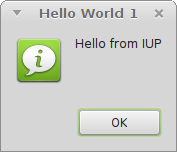

Original authors: Gustavo H. S. de O. Lyrio & Antonio E. Scuri
Open Euphoria version: adapted by Charles A. Newbould
Index
1. Introduction
2. Hello World
2.1 Initialization
2.2 Creating a Dialog
2.3 Adding Interaction
2.4 Adding Layout Elements
2.5 Improving the Layout
3. Simple Notepad
3.1 Main Dialog
3.2 Adding a Menu
3.3 Using Pre-defined Dialogs
3.4 Custom Dialogs
3.5 Adding a Toolbar and a Statusbar
3.6 Defining Hot Keys
3.7 Recent Files Menu and a Configuration File
3.8 Clipboard Support
3.9 More File Management (Drag&Drop, Command Line, ...)
3.10 Dynamic Layout
3.11 External Help
3.12 Final Considerations
4. Simple Paint
4.1 Loading and Saving Images
4.2 Drawing with OpenGL
4.3 Drawing with CD and Printing
4.4 Interactive Zoom and Scrollbars
4.5 Canvas Interaction and a ToolBox
4.6 Image Processing and Final Considerations
5. Advanced Topics
5.1 C Encapsulation
5.2 C Modularization
5.3 High Resolution Display
5.4 Splash Screen, About and System Information
5.5 Dynamic Libraries
6. Simple Calc - Under Construction
6.1 Data Matrix
6.2 Plotting Data
6.3 Numbers, Units and Formulas
6.4 Embedded Help
7. Simple Draw - Under Construction
7.1 Hierarchy Tree for Objects
7.2 Embedded Controls in Canvas
7.3 Script Editor for Lua
7.4 Background Processing using Multithread
7.5 UTF-8 Character Encoding
7.6 Multilanguage Interface
Hello and welcome to the IUP Tutorial. Our goal is to provide a walkthrough guide to develop IUP applications focused in people that haven't used IUP before. First of all it is necessary to describe what IUP is and how it can help you develop your application. IUP stands for "Interface User Portable". It is a multi-platform toolkit for building graphical user interfaces, offering a simple API, and its purpose is to allow the user interface source code of an application to be compiled in different systems without any modification. Supported systems include: GTK+ and Windows. As main advantages, IUP offers: high performance since it uses native interface elements, and a fast learning curve due to the simplicity of its API. Also, IUP uses an abstract layout model based on the boxes-and-glue paradigm from the TeX text editor making the dialog creation task more flexible and independent from the graphics system resolution.
IUP has three concepts that any user has to understand: Elements, Attributes and Callbacks.
Elements are "every kind of interface element present in the application." IUP contains several user interface elements. The library's main characteristic is the use of native elements. This means that the drawing and management of a button or text box is done by the native interface system, not by IUP. This makes the application's appearance more similar to other applications in that system. On the other hand, the application's appearance can vary from one system to another. Besides, some additional controls are drawn by IUP, and are independent from the native system. Dialogs are special elements that represent every window created by IUP. Any application that uses IUP will be composed by one or more dialogs. Every dialog can contains one or more controls inside.
Attributes are "used to change or consult properties of elements." Each element has a set of attributes that affects its behavior or its appearance. Each attribute may work differently for each elements, but usually attributes with the same name work the same. Attribute names are always upper case. But attribute values like "YES", "NO", "TOP", are case insensitive, so "Yes", "no", "top", and other variations will work.
Callbacks are "functions which notify the application that some user interface event occurred." Usually callbacks will be called only when the user interacts with the application elements. If the application register the callback function, then the function will be called every time the event occurs.
All we have seen until now is a short summary of what is behind the IUP toolkit and concepts that the developer needs to be familiarized with when programming with IUP. From now on, we are going to present how to build an IUP application from the most simple example possible to a complex and full of different resources application.
All examples are stored in the examples folder and have the exw extension, to signify that they are GUI applications. Note that the illustrative examples may not look exactly like those in the body of this text, depending on which operating system and, possibly, which version of IUP you are using.
The code bellow will shows how to open an IUP environment and displays a simple message. Each line of code is explained after the code.
For this first example the original C-language code is copied, inside an Open Euphoria comment block, before the Open Euphoria code equivalent is listed. Note how similar they are, especially when the Euphoria code is set in the form of a main routine.
Note also the numeric markers (1 to 7) as comment after the code lines; these link to the explanation which follows.
-- example2_1.exw
-- LyrioScuri Tutorial
/*
#include <stdlib.h>
#include <iup.h>
int main(int argc, char **argv)
{
IupOpen(&argc, &argv);
IupMessage("Hello World 1", "Hello world from IUP.");
IupClose();
return EXIT_SUCCESS;
}
*/
include iup.ew -- 1
function main()
IupOpen() -- 2
IupMessage("Hello World 1", "Hello from IUP") -- 3
--IupMainLoop() -- 4
IupClose() -- 5
return EXIT_SUCCESS -- 6
end function
-- execution
main() -- 7

The following text links the lines:
If you study the Lua version of this example you will find a call to iup.MainLoopLevel. It will check if iup.MainLoop was already called to avoid calling it again. This is useful only if your script could be executed from inside another context, for regular applications there is no need for calling it.
The next example shows how you could address this.
--example2_1a.exw
include iup.ew -- 1
function main() -- 2
IupOpen() -- 3
IupMessage("Hello World 1a", "Hello from IUP") -- 4
if IupMainLoopLevel() = 0 then -- 5
IupExitLoop() -- 6
end if
IupClose() -- 7
return EXIT_SUCCESS -- 8
end function
-- execution
main() -- 9
As above the numeric comments are used to identify the processes.
Note that this second example is not illustrating the conventional approach to IUP programming, which uses IupMainLoop explicitly, but rather to show that there can be multiple ways to achieve a given effect.
Normally we just call IupMainLoop, which listens for events and matches the event owner with a suitable function. You call IupMainLoop just once; IupMainLoopLevel is used to tell you if the main loop is already active.
Let's change the previos example a little bit to add our own dialog.
Dialogs are the core of IUP design and provide the structure for the "top-level-window", as it is known in other GUIs.
A distinguishing feature of IUP is the "bottom-up" approach to design: elements in a GUI are declared from the "inside" outwards, culminating in the declaration of the dialog as the main window.
IUP also provides compositional tools. These enable grouping of associated elements and, most importantly, manage the sizes and relative arrangements within such groups.
The main reason for IUP simplicity of use, however, comes from its universal use, for all types of elements, of attributes, where specific properties are assigned specific values.
-- example2_2.exw
include iup.ew
IupOpen()
atom lbl = IupLabel("Hello world from IUP")
atom dlg = IupDialog(IupVbox({lbl}))
IupSetAttribute(dlg, "TITLE", "Hello World 2")
IupShowXY(dlg, IUP_CENTER, IUP_CENTER)
IupMainLoop()
IupClose()
After opening the IUP session, we declared two new (atom) variables to hold IUP elements; one called dlg for our main dialog and another called lbl, to hold a label containing our hello message. Both variables, in typical Open Euphoria-style, are initialised on declaration. The label control takes the text string as its only argument. The main dialog is created using the IupDialog function. Its parameter is always a single element, which is nearly always a compositional one. Here, because we never need to refer to it again, we make it the result of creating a composition element using IupVbox. A Vbox in IUP is a control that orders all controls passed to it in a vertical direction. In this example, we are only passing one control (our label), but IupVbox is programmed to take a list of elements, hence the use of a one-element sequence here. In the next line we show one way in which IUP changes each control attribute (ie. property). By calling the function IupSetAttribute the programmer is able to specify what value a named attribute should carry in the specific context. In our sample, we are setting the main dialog's caption to "Hello World 2". This concludes the compositional section of our application. (Another compositional element is provided by IupHbox, which arranges its member elements horizontally rather than vertically. Before moving on, think for a minute what, if any, the use of this function would make!)
We now move on to the "action" section! The next function, called IupShowXY, tells IUP how and where to display the main dialog. In this example it is to be displayed at the centre of the screen, both horizontally and vertically, as the repeated values indicate.
Next comes that most important function, IupMainLoop, which we have introduced above. This function tells IUP to wait for events. Without it the program would simply go on, thereby ending the IUP session and terminating the Euphoria program, without dealing with any event. Why not try this out? Comment out this line, run your code and you will see the main dialog blink on the screen; the program ends just after it so you could easily miss the effect! It will prove to be a valuable exercise.
Note: label is a keyword in Euphoria, so you cannot use it as an identifier for a variable - hence the use of the alternative lbl here.
Note also, that for the purposes of generating the Open Euphoria wrapper, iup.ew, all the IUP C-language functions have been mapped into Euphoria functions, but that in several cases, and most in this example, these have been called in "VOID mode", that is, without attempting to trap the return value.
All IUP applications, from the most simple "hello world" to the most complex, follow this same code structure, so it well worth studying it and getting familiar with its form. It is also worth thinking about what sort of "template" most appeals to you. This example has a simple-flow layout, whereas earlier examples adopted a main routine approach (note that it could perfectly reasonably have been cast as a procedure). There is also a case to be made for adopting some form of indentation to show the IUP session more clearly [from after the call to IupOpen() to before the call to IupClose()], especially in the early stages of learning, to emphasise the nature of the process.
In the rest of this presentation I shall adopt the main procedure approach, because it has certain advantages for generalising your applications by allowing the passing of values through main at run time.
In the previous section, we saw how to build a basic IUP application, but without any custom interaction with the dialog. In this section, we add interaction to our application using a button.
Interaction is effected through callbacks. These are special functions defined by the programmer and called by IUP when an event needs to be handled. To create a callback, the programmer must declare a function and put inside its body anything that he/she wants the application to do when the event occurs. After that, it is necessary to inform IUP that the function is, in fact, a callback. That is done calling the function IupSetCallback. This ensures that the function will be executed when a specific event ("action") occurs.
-- example2_3.exw
include iup.ew
function btn_exit_cb( )
IupMessage("Hello World Message", "Hello from IUP")
return IUP_CLOSE
end function
IupOpen()
atom button = IupButton("OK")
atom vbox = IupVbox({button})
atom dlg = IupDialog(vbox)
IupSetAttribute(dlg, "TITLE", "Hello World 3")
IupSetAttribute(dlg, "SIZE", "QUARTERxEIGHTH")
IupSetCallback(button, "ACTION", Icallback("btn_exit_cb"))
IupShowXY(dlg, IUP_CENTER, IUP_CENTER)
IupMainLoop()
IupClose()
In the code, after the usual include and the call to IupOpen, we have added some new lines. These lines contain a regular function called btn_exit_cb that will be registered as our button callback. This function does nothing special: it just shows the "hello" message of the first example and closies the application, by returning code IUP_CLOSE.
Note that we have added a new handle to make our vbox explicit, following the button declaration and before the dialog definition. It isn't necessary to do this, because the variable is never further referenced, but it does make the example code look cleaner!
There is then a new line, containing IupSetCallback which associates an action with an event-handling routine. The first argument is the widget, here the button, which initiates the event.The second argument is a global name for the event we wish to trap. Here we use the generalised term "ACTION". (The names of the available callback actions can be found at each control documentation). As with attribute names, actions are always written in upper-case. The final argument uses the function Icallback which links the event-handler's name directly with this event combination.
When executed, the application's dialog box will show up, and when the user presses the button, a hello message, alongside a button to close the application, are displayed. Although not profound, this small sample of code has covered the process of creating an IUP application, declaring elements and callbacks, and also handling an event. From now on, we are going to be introduced to more IUP controls and how to exploit these to improve our applications.
Until now we have just positioned our controls inside a vbox which, as indicated above, aligns all controls inside it vertically. This is just a small sample of the IUP's layout concept. IUP implements an abstract layout, "in which the positioning of controls is done relatively instead of absolutely". These composition elements are necessary for composing the interface elements. They are boxes and fills invisible to the user, but they play an important part. When a dialog size changes, these containers expand or retract to adjust the positioning of the controls to the new situation allowing the dialog to adapt even if the resolution of the screen changes. That would come in handy if you port your application to another system with a lower resolution, for example. Main composition elements are vertical boxes (vbox), horizontal boxes (hbox) and filling (fill), among others. There is also a depth box (zbox), in which layers of elements can be created for the same dialog, and the elements in each layer are only visible when that given layer is active.
To clarify the way abstract layout works, lets modify our example adding a label to it.
-- example2_4.exw
include iup.ew
function btn_exit_cb()
return IUP_CLOSE
end function
IupOpen()
-- layout
atom lbl = IupLabel("Hello world from IUP")
atom btn = IupButton("OK")
atom vbox = IupVbox({lbl, btn})
atom dlg = IupDialog(vbox)
-- style
IupSetAttribute(dlg, "TITLE", "Hello World 4")
IupSetAttribute(dlg, "SIZE", "QUARTERxQUARTER")
-- action
IupSetCallback(btn, "ACTION", Icallback("btn_exit_cb"))
IupShowXY(dlg, IUP_CENTER, IUP_CENTRE)
IupMainLoop()
IupClose()
Note that there is a new label declaration and this new element appears inside our vbox as the top element. That means it will be displayed above the button. Our example now has two different elements and is disposed vertically - one above the other. An interesting exercise would be to change the code above and use an hbox to see what happens.
Note also that you can use the English spelling of IUP_CENTER if you prefer.
Now that we have covered the basics of abstract layout, let us present three attributes available to both vboxes and hboxes. They are: ALIGNMENT; GAP and MARGIN.
ALIGNMENT defines the horizontal or vertical alignment of elements inside the box. If you are using a vbox, it will be an horizontal alignment, or if you are using an hbox, it will be a vertical alignment. Its values can be ALEFT, ACENTER or ARIGHT for horizontal alignment, and ATOP, ACENTER ir ABOTTOM for vertical alignment. The default values are ALEFT and ATOP.
The GAP attribute defines a space, in pixels, between every element inside the box. If you are using a vbox, it will be a vertical space, or if you are using a hbox, it will be a horizontal space. The default value for GAP is 0 (zero), which means there is no space between elements.
The MARGIN attribute defines a margin, also measured in pixels. Its value has the format "widthxheight", in which width and height are integer values corresponding to the horizontal and vertical margins, respectively. Its default value is "0x0" (no margin).
The additional elements in the next example show how our layout responds to these three attributes.
<eucocde> example2_5.exw
include iup.ew
function btn_exit_cb() return IUP_CLOSE end function
IupOpen()
layout atom lbl = IupLabel("Hello world from IUP") atom btn = IupButton("OK") atom vbox = IupVbox({lbl, btn}) atom dlg = IupDialog(vbox) attributes IupSetAttribute(vbox, "ALIGNMENT", "ACENTER") IupSetAttribute(vbox, "GAP", "10") IupSetAttribute(vbox, "MARGIN", "10x10")
execute IupShowXY(dlg, IUP_CENTER, IUP_CENTER) IupMainLoop() IupClose()</eucode>
After creating the vbox, we have added three lines that set its attributes to values which differ from the default values. The resulting layout is much pleasanter. Note that it is still not quite like the first example, which uses a pre-defined dialog. Can you work out which attributes we need to set in order to obtain a closer match?
== 3. A Simple Notepad Application
Until now we have used two different controls: labels and buttons. Labels show text or images but are not designed for interaction. Buttons allow the user to trigger an event by pressing a mouse button. But none allow the user to insert any data into our application. To do that, we will use a new control, called IupText. It creates an editable text field and has a lot of different attributes available. We will mainly be interested in one for now: MULTILINE. MULTILINE turns the IupText into an editable text field that supports many lines, which is necessary in order to build a simple notepad.
=== 3.1 Main Dialog
Our starting code for this simple notepad is as follows.
example3_1.ex include iup.ew IupOpen() layout
atom multitxt = IupText() atom vbox = IupVbox({ multitxt }) atom dlg = IupDialog(vbox)
attributes IupSetAttribute(multitxt, "MULTILINE", "YES") IupSetAttribute(multitxt, "EXPAND", "YES") IupSetAttribute(dlg, "TITLE", "Simple Notepad") IupSetAttribute(dlg, "SIZE", "QUARTERxQUARTER") IupSetAttribute(dlg, "USERSIZE", NULL)
This code doesn't do a lot, except for the IupText declaration and the call to IupSetAttribute to define the IupText as a MULTILINE. As the default value for this attribute is "NO", we need to set it to "YES" explicitly. Try to comment this line and see what happens. (You might also want to keep entering line-feeds to notice the effect.)
Notice also that the SIZE attribute of the dialog is set. Since the IupText is a control that does not fit its size to its contents, we have to set an initial size for the dialog, or else the result would be a very small dialog. We use a simple size specification that is a quarter of the screen size in both dimensions. The SIZE attribute will also work as a minimum size, so we reset the USERSIZE attribute, after the dialog is shown, to avoid this limitation. Try to comment out this line and check how the dialog interactive resizing behaves.
With these few lines of code, we have build an application where the user can type a large amount of text. But, if you do type a lot of text, you would probably like to save it; unfortunately our application currently offers no such feature. We will handle this in the coming sections.
Almost all applications offer a menu. Menus tend to be used to allow the user to load files, save files, use the clipboard, etc. IUP also offers this resource to the applications. Menus come in four different interface elements: IupItem; IupMenu; IupSeparator; IupSubmenu.
IupItem creates a single item of the menu interface element. When selected, it generates an action.
IupSeparator creates a horizontal line that will appear between two menu items. It is normally used to divide and arrange different groups of menu items.
IupSubmenu creates an item that, when selected, opens another menu.
IupMenu creates the menu element by itself as a list of elements. An IupMenu can include any number of the other 3 types of menu interface elements: IupItem; IupSubmenu; IupSeparator. Any attemp to add another type of interface element into a menu will cause an error.
Let's add a menu with a few items to our example.
-- example3_2.exw
include iup.ew
function exit_cb() -- event-handler (added in 3.2)
return IUP_CLOSE
end function
IupOpen()
-- layout
-- menu (added in 3.2)
atom item_open = IupItem("Open")
atom item_saveas = IupItem("Save As")
atom item_exit = IupItem("Exit")
atom file_menu = IupMenu({item_open, item_saveas, IupSeparator(), item_exit})
atom sub1_menu = IupSubmenu("File", file_menu)
atom menu = IupMenu({sub1_menu})
-- dialog
atom multitext = IupText()
atom vbox = IupVbox({multitext})
atom dlg = IupDialog(vbox)
-- attributes
IupSetAttribute(multitext, "MULTILINE", "YES")
IupSetAttribute(multitext, "EXPAND", "YES")
IupSetAttributeHandle(dlg, "MENU", menu) -- (added in 3.2)
IupSetAttribute(dlg, "TITLE", "Simple Notepad")
IupSetAttribute(dlg, "SIZE", "QUARTERxQUARTER")
IupSetAttribute(dlg, "USERSIZE", NULL)
-- actions (added in 3.2)
IupSetCallback(item_exit, "ACTION", Icallback("exit_cb")) -- event-handler (added in 3.2)
-- launch
IupShowXY(dlg, IUP_CENTER, IUP_CENTER)
IupMainLoop()
IupClose()
Now our example has a few menu element handlers and declarations. Also, we re-introduced our exit-callback for when the item_exit menu item is selected. The next line shows the composition of an IupMenu called file_menu. Note that the menu items are passed in order of appearance, which means that item_open will appear above item_save and so on. There is also an IupSeparator dividing our file menu into two parts: the first takes items that deal direct with files, like open and save, and the second takes the exit item. It's not mandatory to have an IupSeparator in your menu. This is used just to keep things more organized. The next line is a little tricky. We created a submenu to store all of our items. Why not use file_menu directly? We could, but it would be used as the main menu and would end up being the only menu available in our application. It's a good practice to separate menus in submenus and then pass these submenus as items of the main menu. By doing so, an application could have a file menu, a search menu, a help menu, etc., as items of the main menu, as you can see in the main menu declaration on the follwing line.
Once we are done building the main menu, we must set the MENU attribute of the main dialog to the menu we have just created. But since it is neither a string nor a number, we must use a different function to do this association, namely IupSetAttributeHandle.
Notice that the Exit menu item works fine, as we set the Exit menu item action callback, but Open and Save still don't work. That's because we didn't set any callback action for them. Those callbacks will use another IUP feature, which is the subject of our next section.
In the previous section, we added file-open and a file-save menu items, but they had no callbacks associated. That's because we will use new IUP resources to deal with file handling. These resources are called Pre-defined Dialogs.
Some dialogs (like file selection dialogs, font selection dialogs, color selection dialogs) are commonly found in a lot of different applications. It would be annoying to have to build the same dialog again every time we need to select a file, a color or a font. So, IUP provides pre-defined dialogs with all the necessary controls to deal with these common tasks.
We update our last example to handle file input/output and to make use of these IUP pre-defined dialogs.
-- example3_3.exw
include iup.ew
include std/io.e -- for read_file, write_file
IupOpen()
atom multitext = IupText()
IupSetAttribute(multitext, "MULTILINE", "YES")
IupSetAttribute(multitext, "EXPAND", "YES")
IupSetAttribute(multitext, "FONT", "Arial, 12")
atom
item_open = IupItem("Open..."),
item_saveas = IupItem("Save As..."),
item_exit = IupItem("Exit"),
item_font = IupItem("Font..."),
item_about = IupItem("About...")
IupSetCallback(item_exit, "ACTION", Icallback("exit_cb"))
IupSetCallback(item_open, "ACTION", Icallback("open_cb"))
IupSetCallback(item_saveas, "ACTION", Icallback("saveas_cb"))
IupSetCallback(item_font, "ACTION", Icallback("font_cb"))
IupSetCallback(item_about, "ACTION", Icallback("about_cb"))
function readfile(sequence filename)
object str = read_file(filename)
if atom(str) then
IupMessage("Error", sprintf("Cannot open file: %s", {filename}))
return 0
else
return str
end if
end function
atom file_menu = IupMenu({
item_open,
item_saveas,
IupSeparator(),
item_exit
})
atom format_menu = IupMenu({
item_font
})
atom help_menu = IupMenu({
item_about
})
atom sub_menu_file = IupSubmenu("File", file_menu)
atom sub_menu_format = IupSubmenu("Format", format_menu)
atom sub_menu_help = IupSubmenu("Help", help_menu)
atom menu = IupMenu({
sub_menu_file,
sub_menu_format,
sub_menu_help
})
atom vbox = IupVbox({
multitext
})
atom dlg = IupDialog(vbox)
IupSetAttributeHandle(dlg, "MENU", menu)
IupSetAttribute(dlg, "TITLE", "Simple Notepad")
IupSetAttribute(dlg, "SIZE", "HALFxHALF")
IupShowXY(dlg, IUP_CENTER, IUP_CENTER)
IupSetAttribute(dlg, "USERSIZE", NULL)
IupMainLoop()
IupClose()
function writefile(sequence filename, sequence lines)
atom fn = open(filename, "w")
if fn = 0 then
IupMessage("Error", sprintf("Cannot open file: %s", {filename}))
return 0
else
write_file(filename, lines)
return 1
end if
end function
function open_cb()
atom filedlg = IupFileDlg()
IupSetAttribute(filedlg, "DIALOGTYPE", "OPEN")
IupSetAttribute(filedlg, "EXTFILTER", "Text Files|*.txt||All Files|*.*|")
IupPopup(filedlg, IUP_CENTER, IUP_CENTER)
if not IupGetInt(filedlg, "STATUS") = 1 then
sequence filename = IupGetAttribute(filedlg, "VALUE")
object str = readfile(filename)
if sequence(str) then
IupSetAttribute(multitext, "VALUE", str)
end if
end if
IupDestroy(filedlg)
return IUP_DEFAULT
end function
function saveas_cb()
atom filedlg = IupFileDlg()
IupSetAttribute(filedlg, "DIALOGTYPE", "SAVE")
IupSetAttribute(filedlg, "EXTFILTER", "Text Files|*.txt|All Files|*.*|")
IupPopup(filedlg, IUP_CENTER, IUP_CENTER)
sequence filename = IupGetAttribute(filedlg, "VALUE")
sequence str = IupGetAttribute(multitext, "VALUE")
integer count = IupGetInt(multitext, "COUNT")
writefile(filename, str)
IupDestroy(filedlg)
return IUP_DEFAULT
end function
function font_cb()
atom fontdlg = IupFontDlg()
sequence font = IupGetAttribute(multitext, "FONT")
IupSetStrAttribute(fontdlg, "VALUE", font)
IupPopup(fontdlg, IUP_CENTER, IUP_CENTER)
if IupGetInt(fontdlg, "STATUS") = 1 then
font = IupGetAttribute(fontdlg, "VALUE")
IupSetStrAttribute(multitext, "FONT", font)
end if
IupDestroy(fontdlg)
return IUP_DEFAULT
end function
function about_cb()
IupMessage("About", "Simple Notepad")
return IUP_DEFAULT
end function
function exit_cb()
return IUP_CLOSE
end function
Note that we need to access the multitext control from inside the menu callbacks. There are several ways to do that; the simplest one is to declare it outside the event-handlers, so it is "visible" throughout the application's code. In the next example, a different approach is taken.
Let's take a look at the new callback called open_cb. This callback will handle the file opening when the user clicks on the Open menu item. For this we will use a IUP predefined dialog called IupFileDlg. This dialog is a standard file-handling dialog with all the features that we need to select a file from the file system; it also saves a lot of work. Inside the callback we refine our IupFileDlg, and set it to be an "open" dialog with attribute DIALOGTYPE. Also we set EXTFILTER attribute to "Text Files|*.txt|All Files|*.*|", since we want our application to handle text files but we leave the option for listing and selecting other files. Note also that the application cannot "open" a non-existent file, using the STATUS attribute.
Now the program calls IupPopup, which is a function similar to IupShow, but it restricts the user interaction only within the specified dialog. It is the equivalent of creating a Modal dialog in some toolkits. Its arguments are our file dialog handle followed by the x and y coordinates that we defined as the centre of the screen with IUP_CENTER.
Then we have a conditional test in which we get the value of filedlg STATUS with IupGetInt. Why not use IupGetAttribute instead? That's because IupGetAttribute returns string attributes, but we know that STATUS is an integer so we use the appropriate function IupGetInt.
Once our file dialog returns a valid status, we are able to recover the name of the selected file using IupGetAttribute to retrieve the VALUE attribute. Then we read the file using a standard function and fill in its contents on the multitext control by using the IupSetStrAttribute function to set its VALUE attribute. We could have used the IupSetAttribute function here, but follow the C-language practice because C strings returned by IupGetAttribute use a pointer.
Now we don't need this dialog any more, so you can simply call IupDestroy to remove filedlg from memory.
Next there is another callback, saveas_cb, which allows for the selection of a file name for saving the content of a file. It is very similar to open_cb, but DIALOGTYPE is set to SAVE, so this time it consider a file name for saving. In this case the filename can refer to a new file, but if an existing file is chosen then the user will be notified of overwriting so it can cancel and try again. After selecting the filename the multitext contents are copied to the file using another standard routine. (Note that the double option is only possibly by disregarding the STATUS value.)
Now comes the font_cb callback that, as you may have already guessed, will call a predefined dialog to select a font. To do that, we use IupFontDlg, as a parallel of IupFileDlg. You can set or change the font by changing the FONT attribute in the multitext control; this is precisely what this event-handler does. (Note that the multitext widget's font has been pre-set at the top of the code.)
The next callback is about_cb, which just calls IupMessage to display text to the user.
The additional lines add the new callback registrations. Also we added have added "..." to the text of the menu items. This is not mandatory, but is highly recommended by common User Interface Guidelines. Note also that the main dialog is now bigger - to make it of more general applicability.
So the result is a brand new text editor, crated and serviced using IUP. But what happens if the dialog you need is not provided by IUP as a predefined dialog? That will be the subject of our next section.
We saw in the previous section that IUP provides predefined dialogs that can be utilised in applications to save a lot of development time. But if the dialog your application needs is not one of IUP's predefined dialogs, then you have to build your own dialog. The good news is that you have already covered this when building the main dialog. The tricky part is how to handle more than one dialog at the same time.
For this we shall add two new items to a new Edit menu: Find and Go To. Find will search the multitext contents while looking for a string and highlight it when found. It will search for this string many times, and the search can also be case sensitive. The purpose of Go To is to (re-)position the caret to a specific line in the text.
These additions may seem relatively simple, but they involve quite a lot of steps, some quite detailed. These also involve several "new" ideas and raise a number of fundamental aspects of programming using IUP. So, the strategy here is to break down the new features into chunks, where each addition is outlined before the code blocks are introduced.
Before doing even that, however, a few observations might be in order. Generally speaking, most problems in IUP have more than one solution, so the approach described here is by no means the only one. Additionally, sometimes it is easier to address an issue using a feature of the "carrier" language, rather than through IUP itself. Bits of both approaches can sometimes be the best solution, if not the purest. For any solution you can probably think of another one!
It is probably true to say that IUP's capacity to solve problems is mainly delivered using the attribute concept. Each iteration of IUP adds more attribute properties to established controls. If you read the "Attributes" entry in IUP's documentation you can clearly discern a close mapping with OOP: inheritance and "property" values, along with accessor and mutator actions, through variants of "IupGetAttribute" and "IupSetAttribute". What is explicit is that setting an attribute usually has an "action" associated with it; what isn't explicit is that an IUP user can exploit these facilities to define her/his own attributes.
Now back to the "plot".
The code from Section 3.3 first needs the addition of the identifiers to add the menu and items, as follows:
item_find = IupItem("Find.."),
item_goto = IupItem("Go To..."),
--
atom edit_menu = IupMenu({
item_find,
item_goto
})
--
atom sub_menu_edit = IupSubmenu("Edit", edit_menu)
plus the menu-definitional change:
atom menu = IupMenu({
sub_menu_file,
sub_menu_edit, -- addition
sub_menu_format,
sub_menu_help
})
These additions can be found as example3_4a.exw. Each additional line has been annotated by comment and you can try it out by running this code.
Let's now "design" the process we wish to add to effect a search facility.
On clicking the menu item we want to open a dedicated dialog to guide users through this process. We want this dialog to appear above our main dialog (this is known as a popup dialog), but not so as to cover it, and to contain within it several features:
We then want to lay out all these elements in a nice-looking manner.
IupToggle is a two-state (on/off) button that, when selected, execute a callback. Toggles are normally used to set flags. In this case, we used it to allow the user to decide if the search will be case sensitive or not.
Note also the use of IupFill. If you put an IupFill inside an IupHbox, it will expand between the two elements, pushing one to the left and the other to the right. Or if you put it in an IupVbox, above a element, it will push the element all the way down. In our case, IupFill is being used to push the buttons to the right, inside our IupHbox.
Note that our new dialog has a lot of new parameters set. DIALOGFRAME will remove minbox, maxbox, and it will resize from the corner of the dialog. This will provide reduced functionality but still giving a standard dialog box appearance. DEFAULTENTER defines a button to be activated when the users presses ENTER, in this case it will have the same effect as pressing the bt_next button. DEFAULTESC works the same way for the ESC key by activating the bt_close button. If you use these facilities you may well see, in the GUI, a simulated button-press!
The bare bones of the relevant code are shown in example3_4b.exw. Again the newly-added code is annotated with comment.
To complete this step an event-handler callback routine has been added to respond to the item_find selection. As yet, all it does is check that the find_dlg dialog opens and looks OK.
A more elaborate naming convention has been adopted for this callback routine, as a marker that there are more events than "ACTION"!
Finally a further callback routine enables the "Find" dialog to be closed. Note that the dialog is hidden rather than destroyed, so it remains available for future calls and doesn't have to be re-created.
There is quite a lot to take in here, but do try to understand the approach. Obviously we need another callback for bt_next, which initiates the find/search process.
Here are some specific things to think about before proceding:
Before embarking on the next task a bit of a digression is needed. Euphoria has the built-in function match which returns the (starting) position of a search text in a source text. IUP, in its IupText element, has three concepts:
You might think that the return value of match and pos are the same thing, but, unfortunately they are not. This is because Euphoria has a 1-based system of in-text location; the C-language is 0-based. In the Euphoria wrapper, therefore, we have adopted the Euphoria convention, but please note that this doesn't match the IUP documentation!
Recall that not only do we wish our search facility to locate our "find" in the master text but also we wish to highlight it. That's why we need access to IUP's world, so that we can utilise IupText's attributes, including using the lin and col values.
The stored example3_4c shows a way of addressing these issues and thus completes the Find option.
The new steps are as follows.
We add a little function that packs match to be case sensitive. A callback routine is added for bt_next and this is where all the remaining 'search' action goes. Each line has been annotated in the code block to aid understanding.
To finish off this extension to the notepad, another button has been added to the find dialog, to enable the user to "reset" - start a [new] search from the start of the source! (You will notice just how many bits-and-pieces need to be re-initialised.)
Please try out this version to see how it delivers.
Note also that the 'about' menu item now attributes the authors of all this work!
Here we want to be able to move to a specific line of text and will move the caret there.
The complete code is here:
-- example3_4.exw
Another way of packaging this application is offered in example3_4x.exw, where more separation of code blocks has been effected.
If you have reached this point successfully, you might also consider looking at the IUP website and surveying this Tutorial there, and scrutinising the two solutions (C and Lua) presented.
These exploit a rather hidden feature of IUP. All the documentation about attributes implies that only those listed for a given control element have any meaning and the NULL return value is merely a trap for mistakes! In fact you can define your own and set and get values. You can even test for the existence of one that you haven't yet defined - like a boolean test to see if something needs to be done.
These solutions also embed the 'child' dialogs, including creation, inside callback functions. This entails quite a lot of getting and setting of layout hierarchy to create selective visibility of IUP elements in different code blocks. In Euphoria, use of scope rules seems a better route for us to take!